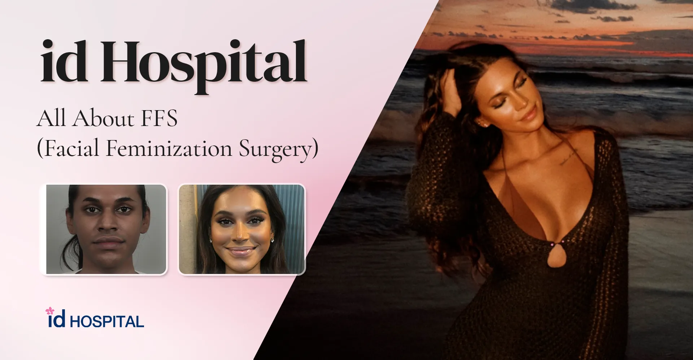
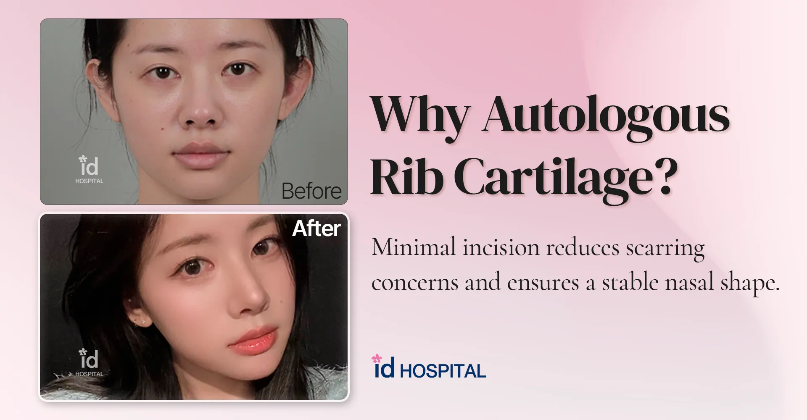
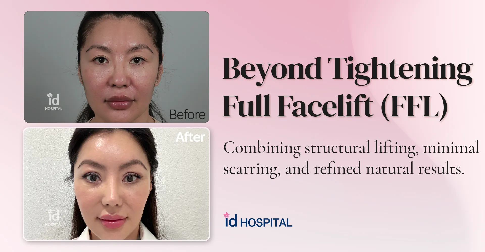
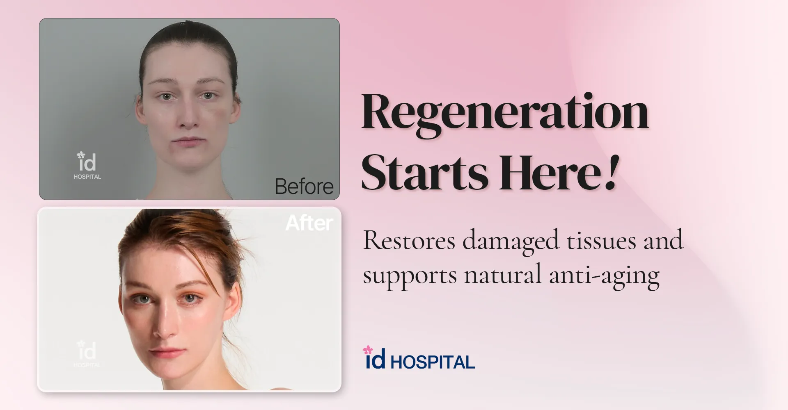
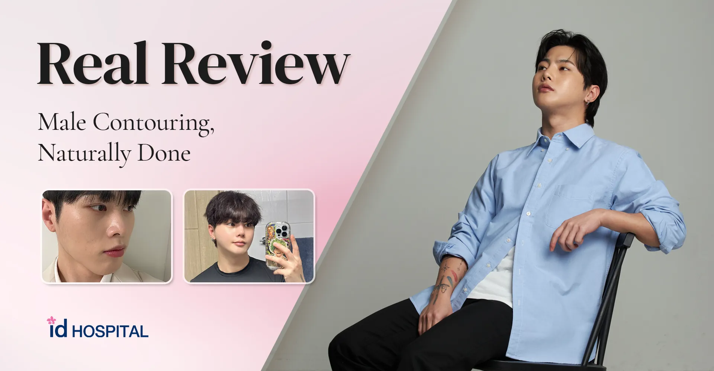
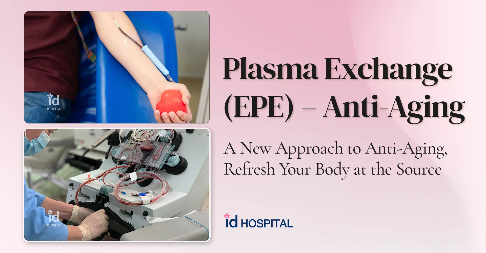
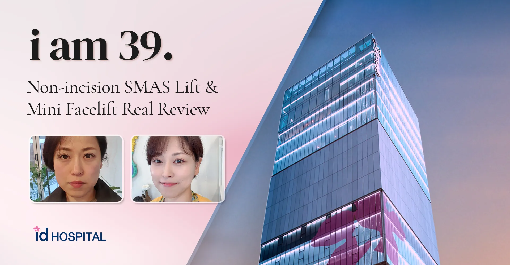
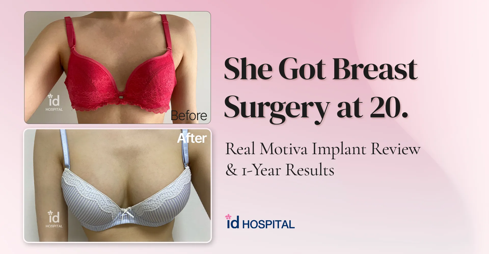
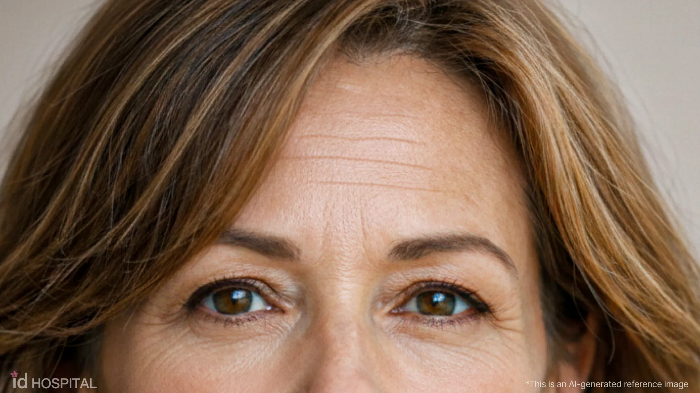

What Does Your Face Actually Need? Let AI Analyze It. Powered by 20 Years of Clinical Data
When it comes to aesthetic treatments, it can be difficult to know where to start.Do you need lifting? More volume? Skin treatment? Facial contouring?

What Exactly Is a Mini Facelift? A Simple Guide with Q&A for Beginners
What Exactly Is a Mini Facelift? A Simple Guide with Q&A for BeginnersMini Facelift- short procedure time- minimal scarring- quick recovery- effective

Exo Plasma Exchange: High-end Recovery Program for Reverse-Aging
Exo Plasma Exchange:High-end Recovery Program for Reverse-Aging Hi, this is Riley from FANSHIAESTHETICS! 👋 Today, I’m sharing a fun and eye-opening topic re

How long should I stay in Korea for FFS? About Facial Feminization Surgery
How long should I stay in Korea for FFS?- About Facial Feminization Surgery(FFS) Hi, this is Riley from FANSHI AESTHETICS! 👋 Have you ever thought about how

Autologous Rib Cartilage Rhinoplasty: The Final Stop for Nose Revision | FANSHI AESTHETICS
Autologous Rib Cartilage Rhinoplasty- Minimal incision reduces scarring concerns- Maintains stable nasal shape over time! Hi, this is Riley from id Ho

Beyond Skin Tightening: Full Facelift at FANSHI AESTHETICS
Beyond TighteningFull Facelift (FFL)Hello, this is FANSHI AESTHETICS. As the seasons change—especially during the end and beginning of the year—many people

Beyond Aging: Stem Cell Regenerative Therapy at FANSHI AESTHETICS
Stem Cell Therapy for Anti-AgingRegenerative Medicine at FANSHI AESTHETICS Hello, this is FANSHI AESTHETICS. As 2025 draws to a close, there is one word that natu

Male Facial Contouring (V-line & Zygoma) – A Real Patient Review
Male Facial Contouring (V-line & Zygoma)– Real Patient Review Hello, this is FANSHI AESTHETICS. In today’s post, we would like to share a real Before & Afte

A New Reverse-Aging Solution That Restores the Body’s Natural Recovery Power: Plasma Exchange Therapy (id EPE)
Hello, this is FANSHI AESTHETICS. Once considered nothing more than a fantasy found in movies, “reverse aging” is now becoming a realistic topic backed by s

i am 39. id Premium SMAS Lift & Mini Facelift Real Review
i am 39. id Premium SMAS Lift & Mini Facelift Real Review Hi, this is FANSHI AESTHETICS! 👋 Today, I’m sharing a hot real review from someone who underwent a

She Got Breast Surgery at 20: Real Motiva Implant Review & 1-Year Results
She Got Breast Surgery at 20: Real Motiva Implant Review & 1-Year Results- She Got Breast Surgery at 20: A Real Patient's Motiva Implant Journey- When

When Upper Eyelid Surgery Doesn’t Fully Improve a Tired Look
Patients with hooded eyes or heavy upper eyelids often consider upper blepharoplasty as the primary solution for a tired or aged appearance.Upper blep